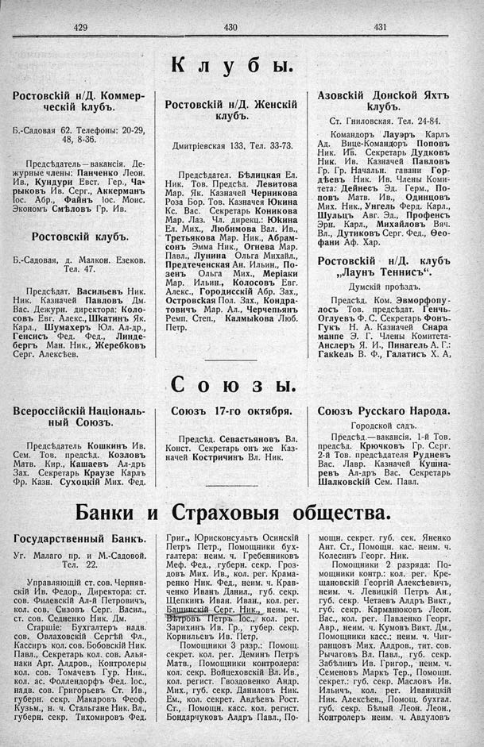

Лист источника 275
Скан

Распознанный текст
429
430
431
Клубы.
Ростовскій н/Д. Коммер-
ческій клубъ.
Б.-Садовая 62. Телефоны: 20-29,
48, 8-36.
Предсѣдатель — вакансія. Де-
журные члены: Панченко Леон.
Ив., Кундури Евст. Гер., Ча-
рыковъ Ив. Серг., Аккерманъ
Іос. Абр., Файнъ Іос. Моис.
Экономъ Смѣловъ Гр. Ив.
Ростовскій клубъ.
Б.-Садовая, д. Малкон. Езеков.
Тел. 47.
Предсѣдат. Васильевъ Ник.
Ник. Казначей Павловъ Дм.
Вас. Дежурн. директора: Коло-
совъ Евг. Алекс., Шкатинъ Як.
Карл., Шумахеръ Юл. Ал-др.,
Генсисъ Фед. Фед., Линде-
бергъ Ман. Ник., Жеребковъ
Серг. Алексѣев.
Ростовскій н/Д. Женскій
клубъ.
Дмитріевская 133. Тел. 33-73.
Предсѣдател. Бѣлицкая Ел.
Ник. Тов. Предсѣд. Левитова
Мар. Як. Казначей Черникова
Роза Бор. Тов. Казначея Юкина
Кс. Вас. Секретарь Коникова
Мар. Лаз. Чл. дирекц.: Юкина
Ел. Мих., Любимова Вал. Ив.,
Третьякова Мар. Ник., Абрам-
сонъ Эмма Ник., Огнева Мар.
Павл., Лунина Ольга Михайл.,
Предтеченская Ан. Ильин., По-
зенъ Ольга Мих., Меріаки
Мар. Ильин., Колосовъ Евг.
Алекс., Городисскій Абр. Зах.,
Островская Пол. Зах., Кондра-
товичъ Мар. Ал., Черчепьянъ
Ремп. Степ., Калмыкова Люб.
Петр.
Азовскій Донской Яхтъ
клубъ.
Ст. Гниловская. Тел. 24-84.
Командоръ Лауэръ Карлъ
Ад. Вице-Командоръ Поповъ
Ник. Ив. Секретарь Дудковъ
Ник. Ив. Казначей Павловъ
Гр. Гр. Начальн. гавани Гор-
дѣевъ Ник. Ив. Члены Коми-
тета: Дейнесъ Эд. Герм., По-
повъ Матв. Ив., Одинцовъ
Мих. Ник., Унгель Ферд. Карл.,
Шульцъ Авг. Эд., Профенсъ
Эрн. Карл., Михайловъ Вяч.
Вл., Дутиковъ Серг. Фед., Ѳео-
фани Аф. Хар.
Ростовскій н/Д. клубъ
„Лаунъ Теннисъ“.
Думскій проѣздъ.
Предсѣд. Ком. Эвморфопу-
лосъ Тов. предсѣдат. Генчъ-
Оглуевъ Ф. С. Секретарь Фонъ-
Гукъ Н. А. Казначей Спара
манпе Э. Г. Члены Комитета-
Анслеръ Я. И., Пинагель А. Г.:
Гаккель В. Ф., Галатись Х. А,
Союзы.
Всероссійскій Національ-
ный Союзъ.
Предсѣдатель Кошкинъ Ив.
Сем. Тов. предсѣд. Козловъ
Матв. Кир., Кашаевъ Ал-дръ
Зах. Секретарь Краузе Карлъ
Фр. Казн. Сухоцкій Мих. Фед.
Союзъ 17-го октября.
Предсѣд. Севастьяновъ Вл.
Конст. Секретарь онъ же Каз-
начей Костричинъ Вл. Ник.
Союзъ Русскаго Народа.
Городской садъ.
Предсѣд.—вакансія. 1-й Тов.
предсѣд. Крючковъ Гр. Серг.
2-й Тов. предсѣдателя Рудневъ
Вас. Лавр. Казначей Кушна-
ревъ Ал-дръ Вас. Секретарь
Шалковскій Сем. Павл.
Банки и Страховыя общества.
Государственный Банкъ.
Уг. Малаго пр. и М.-Садовой.
Тел. 22.
Управляющій ст. сов. Черняв-
скій Ив. Федор., Директора: ст.
сов. Филевскій Ал-й Петровичъ,
кол. сов. Сизовъ Серг. Васил.,
ст. сов. Седненко Ник. Дм.
Старшіе: Бухгалтеръ надв.
сов. Овлаховскій Сергѣй Фл.,
Кассиръ кол. сов. Бобовскій Ник.
Павл., Секретарь кол. сов. Алья-
наки Арт. Алдров., Контролеры
кол. сов. Томачевъ Гур. Ник.,
кол. ас. Фоллендорфъ Фед. Іос.,
надв. сов. Григорьевъ Ст. Ив.,
губерн. секр. Макаровъ Феоф.
Кузьм., н. ч. Стальгане Ник. Вл.,
губерн. секр. Тихомировъ Фед.
Григ., Юрисконсультъ Осинскій
Петръ Петр., Помощники бух-
галтера: неим. ч. Гребенниковъ
Меф. Фед., губерн. секр. Гроз-
довъ Мих. Ив., кол. рег. Крама-
ренко Ник. Фед., неим. ч. Крав-
ченко Иванъ Данил., губ. секр.
Щепкинъ Иван. Иван., кол. рег.
Башинскій Серг. Ник., неим. ч.
Вѣтровъ Петръ Іос., кол. рег.
Зарихинъ Ив. Гр., губер. секр.
Корнильевъ Ив. Петр.
Помощники 3 разр.: Помощ.
секрет. кол. рег. Деминъ Петръ
Матв., Помощники контролера:
кол. секр. Войцеховскій Вл. Ив.,
кол. регист. Гвоздовенко Андр.
Мих., губ. секр. Даниловъ Ник.
Ем., кол. секрет. Авдѣевъ Рост.
Ст., Помощн. касс. кол. регист.
Бондарчуковъ Алдръ Павл., По-
мощн. секрет. губ. сек. Яненко
Ант. Ст., Помощн. кас. неим. ч.
Колесинъ Георг. Ник.
Помощники 2 разряда: По-
мощники контр.: кол. рег. Кре-
щановскій Георгій Алексѣевичъ,
неим. ч. Левицкій Петръ Ан.,
губ. секр. Четаевъ Алдръ Викт.,
губ. секр. Карманюковъ Леон.
Вас., кол. рег. Павленко Георг.
Авр., неим. ч. Кумовъ Викт. Дм.,
Помощники касс.: неим. ч. Чиг-
ранцовъ Мих. Алдров., тит. сов.
Рычаговъ Вл. Павл., губ. секр.
Забѣлинъ Ив. Григор., неим. ч.
Семеновъ Маркъ Тер., Помощн.
секрет.: губ. секр. Масловъ Ив.
Ильичъ, кол. рег. Иваницкій
Ник. Алексѣев., Помощ. бухгал.
губ. секр. Бѣлый Леон. Леон.,
Контролеръ неим. ч. Авдуловъ